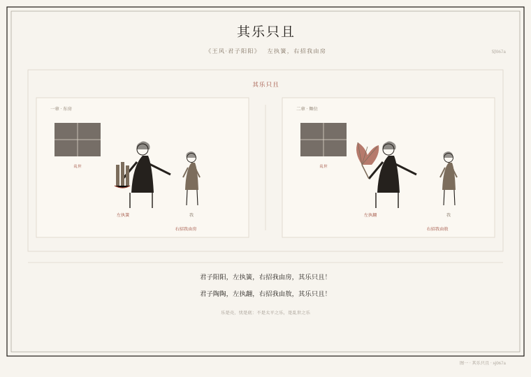
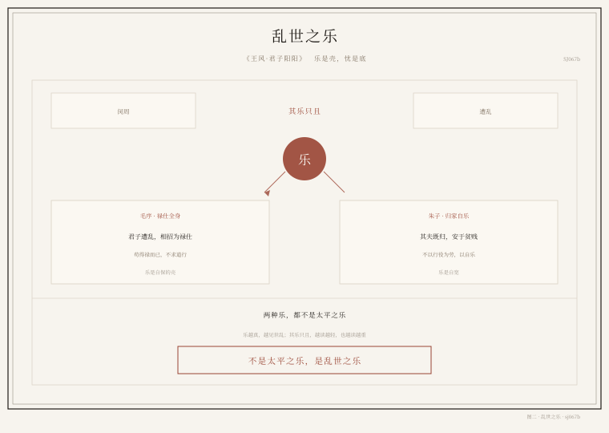

第六十七篇 君子阳阳
王风 · 之三 SJ067
朗读 · 普通话
依经文原文朗读，章次不读出；配古琴底乐，不改速、不加拖腔。全库同一音色（豆包 TTS），非播音员录制。
一 解题
诗三判：
- 谁在说：诗面是一个被「君子」招引的人。毛序说，「我」是君子之友，同在乐官；朱子说，此诗「疑亦前篇妇人所作」，是行役者归家后，家人看他安贫自乐。两读都通，本库并存。
- 说什么事：君子阳阳、陶陶，左执簧、翿，右招「我」由房、由敖，末句都是「其乐只且」。表面全是乐：执乐器、入东房、入舞位、招同伴；背后却是「闵周」——君子遭乱，相招为禄仕，全身远害。
- 为何编在此：王风第三首。前两篇《黍离》《君子于役》，一写国破，一写家散；这一篇转到乱世里士的自处：或禄仕全身，或归家自乐。乐是壳，忧是底。
《毛序》：「《君子阳阳》，闵周也。君子遭乱，相招为禄仕，全身远害而已。禄仕者，苟得禄而已，不求道行。」
郑笺：「由，从也。君子禄仕在乐官，左手持笙，右手招我，欲使我从之于房中，俱在乐官也。我者，君子之友自谓也，时在位，有官职也。」
朱子《诗集传》：「赋也。阳阳，得志之貌。簧，笙竽管中金叶也。……由，从也。房，东房也。只且，语助辞。○诗疑亦前篇妇人所作。盖其夫既归，不以行役为劳，而安于贫贱以自乐，其家人又识其意而深叹美之，皆可谓贤矣，岂非先王之泽哉？或曰：序说亦通，宜更详之。」
本库的看法：《君子阳阳》是一首「乱世里的乐」的诗。
表面是乐，背后是闵周；或说是行役者归家后的安贫自乐。乐是壳，忧是底；不是太平之乐，是乱世之乐。
「其乐只且」越重复，越见其不得已。
先辨三物：阳阳不是「阳光」，是得志自得之貌；陶陶不是「陶器」，是和乐之貌；簧不是「弹簧」，是笙簧；翿不是「大道」，是羽舞所持；由房不是「房间」，是从于东房；由敖不是「遨游」，是从于舞位。
二 经文
第一章
君子阳阳，左执簧，右招我由房，其乐只且！
第二章
君子陶陶，左执翿，右招我由敖，其乐只且！
分章：二章，章四句。
三 韵读
《诗本音》：阳【十阳】、簧【十一唐】、房【十一唐】；陶【六豪】、翿【六豪】、敖【六豪】；「只且」说见《麟之趾》。
「只且」不入韵；「我」不入韵。一章三韵，二章三韵；「阳阳」换「陶陶」，「簧」换「翿」，「房」换「敖」，末句「其乐只且」不变。物换，位换，乐不变；乐不变，底色也不变。
四 字义与名物
字义
- 君子——贤者、僚友；朱子说此篇「疑亦前篇妇人所作」，则「君子」是妇人称夫。
- 阳阳——得志自得之貌；毛传说是「无所用其心」，朱子说是「得志之貌」。
- 陶陶——和乐之貌。
- 簧（huáng）——笙簧；笙竽管中的金叶。不是「弹簧」。
- 翿（dào）——羽舞所持的羽旄；不是「大道」。
- 由——从；跟从。
- 房——东房；不是「房间」的泛称。
- 敖——舞位、燕舞之位；不是「遨游」。
- 招——招手；招引。
- 我——君子之友自谓；朱子读法里，是家人、妇人。
- 只且——语助辞；不是「只有且」。
- 乐——快乐、乐此；音洛。
- 禄仕——为禄而仕；不是「俸禄仕途」的泛称。
- 全身远害——保身避祸。
- 闵周——忧周、怜周；不是姓「闵」。
- 遭乱——遭遇乱世。
- 相招——招呼同伴。
- 苟得禄——苟且得禄。
- 不求道行——不求行道。
- 房中之乐——国君房中之乐；毛传以「房」为房中之乐。
- 燕舞之位——宴饮舞蹈之位。
名物
- 簧——笙簧；一章所执。
- 翿——羽旄；二章所执，舞者所用。
- 房——东房；一章所入。
- 敖——舞位；二章所入。
- 笙——乐器；簧之所附。
五 今译
第一章
那位君子意气扬扬，左手拿着笙簧，右手招我跟他到东房，多么快乐啊！
第二章
那位君子和和乐乐，左手拿着羽旄，右手招我跟他到舞位，多么快乐啊！
说明：「阳阳」今译作「意气扬扬」，「陶陶」作「和和乐乐」；「由房」作「到东房」，「由敖」作「到舞位」；「其乐只且」作「多么快乐啊」，「只且」不另译。
六 章旨
一章：阳阳—簧—房—乐。
君子得志自得，左手执笙簧，右手招「我」入东房；末句「其乐只且」，把一场招引收在「乐」上。
二章：陶陶—翿—敖—乐。
君子和乐，左手执羽旄，右手招「我」入舞位；末句仍是「其乐只且」。只换场所与器物，不换「乐」。
两章合看：「阳阳」换「陶陶」，「簧」换「翿」，「房」换「敖」，末句不变。
物换、位换，乐不变；乐不变，底色也不变。毛序读作「禄仕全身」：乱世里，君子相招为禄仕，苟得禄而不求道行，乐是自保的壳。朱子读作「归家自乐」：行役者既归，不以行役为劳，安于贫贱以自乐，乐是自宽。两种乐，都不是太平之乐。
七 诗教
- 赋：朱子标「赋也」。直陈执簧、执翿、招我、入房、入敖；不借比兴，只把一场乐事摆出来。
- 观：观「乱世之乐」——乐越真，越见世乱；观「禄仕全身」——君子在乐官里藏身；观「归家自乐」——行役者归来后的安贫；观「其乐只且」的反面——乐是壳，闵周是底。
- 群：可与乱世中自保的人同群，与行役归来的人同群。诗不写悲，只写乐；悲在乐外。
- 怨：怨在「闵周」，不在字面。以乐写忧，比直斥更婉；「其乐只且」四字，越读越轻，也越读越重。
八 分寸与边界
- 不可把「阳阳」当「阳光」。阳阳是得志自得之貌。
- 不可把「陶陶」当「陶器」。陶陶是和乐之貌。
- 不可把「簧」当「弹簧」。簧是笙簧，笙竽管中的金叶。
- 不可把「翿」当「大道」。翿是羽舞所持的羽旄。
- 不可把「由房」当「从房间」。由是从，房是东房。
- 不可把「由敖」当「遨游」。敖是舞位、燕舞之位。
- 不可把「只且」当「只有且」。只且是语助辞。
- 不可把「禄仕」当「俸禄仕途」的泛称。禄仕是为禄而仕；毛序说「苟得禄而已，不求道行」。
- 不可把「闵周」当姓「闵」。闵周是忧周、怜周。
- 不可把「其乐只且」当「太平之乐」。它是乱世之乐：或自保，或自宽。
- 不可把「乐」只当「音乐」。乐是快乐、乐此；音洛。
九 存疑
- 诗旨：毛序「闵周，君子遭乱，相招为禄仕，全身远害」；朱子「诗疑亦前篇妇人所作，其夫既归，安于贫贱以自乐」。本库两读并存，以「乱世之乐」为共同底色。
- 说话人：「我」是君子之友，还是妇人、家人？毛、朱两读；本库不废毛序，也不废朱子。
- 「君子」：贤者、僚友，还是妇人称夫？随两读而变。
- 「阳阳」：毛传「无所用其心」，朱子「得志之貌」，孔疏「贤者在贱职而亦意气阳阳，是其无所用心，故不忧」；本库取「得志自得」，并存毛传、孔疏。
- 「由」：毛传「用也」，郑笺、朱子「从也」；本库从「从」。
- 「房」：毛传「国君有房中之乐」，郑笺「房中，俱在乐官」，朱子「东房」；本库取「东房」，并存房中之乐。
- 「敖」：郑笺「燕舞之位」，朱子「舞位」；本库取「舞位」。
- 「只且」：语助辞；无实义。
- 「乐」：音洛；快乐、乐此。毛序读为「且乐此而已」，朱子读为「深叹美之」；一无奈，一赞美。
- 「其乐只且」是否反讽：毛序读法近于无奈的自保，朱子读法近于真诚的自宽；本库不作单一反讽，两读并存。
十 跨典
- 《王风·君子于役》：前一篇。朱子说此篇「疑亦前篇妇人所作」；前篇写别，此篇写归；前篇是黄昏思夫，此篇是归家之乐。
- 《王风·黍离》：王风首篇。黍离写国破，君子阳阳写乱世自处；一悲一乐，乐中有忧。
- 《论语·卫灵公》：「君子固穷，小人穷斯滥矣。」乱世君子如何自处，此篇给出一种答案：禄仕全身，或安贫自乐。
- 《论语·宪问》：「邦有道，谷；邦无道，谷，耻也。」禄仕在乱世，正是这句话的难处。
- 《孟子·尽心上》：「穷则独善其身。」全身远害与安贫自乐，都可归入「独善」。
- 《邶风·北门》：「王事适我，政事一埤益我。」仕途苦，与此篇的乐官之乐对读，更见「乐」是选择，也是退路。
十一 双卡与图
双卡十对：
| 阳阳（得志自得） |
阳阳（阳光，误） |
| 陶陶（和乐） |
陶陶（陶器，误） |
| 簧（笙簧） |
簧（弹簧，误） |
| 翿（羽舞所持） |
翿（大道，误） |
| 由房（从于东房） |
由房（从房间，误） |
| 由敖（从于舞位） |
由敖（遨游，误） |
| 只且（语助） |
只且（只有且，误） |
| 禄仕（为禄而仕） |
禄仕（俸禄仕途，误） |
| 闵周（忧周） |
闵周（姓闵，误） |
| 其乐只且（乱世之乐） |
其乐只且（太平之乐，误） |

图一 · 左执簧，右招我由房 房与舞位图

图二 · 乐是壳，忧是底 义理图
读图三处：
- 簧与翿：图一，一章执笙簧入东房，二章执羽旄入舞位；器物不同，招引相同。
- 房与敖：图一，东房是室内，舞位是宴舞之位；两个空间，都是乱世里的藏身处。
- 乐与忧：图二，毛序读「禄仕全身」，朱子读「归家自乐」；两种乐，都不是太平之乐。